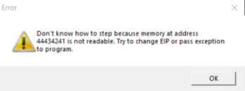

Buffer Overflow
Buffer overflow works by taking control of the execution of a program, this means being able to force it to behave differently from its original behavior .
A buffer overflow attack can lead to:
• An application or operating system crash, causing a denial of service
• Privilege escalation
• Remote code execution
• Security features bypass
A buffer
is an area,
the stack, in the computer Random Access Memory (RAM) reserved for temporary data storage. This data can be:
• User input
• Parts of a video file in streaming
• Server banners received by a client application
• ...
If the developer of an application does not enforce buffers' limits, an attacker could find a way to write more data than the buffer can handle, thus actually writing arbitrary code in the computer RAM; this can be exploited to get control over the program execution flow
Immunity Debugger If we wont exploit the vulnerability we have to change the code that goes in the EIP in order to take control of the program flow
